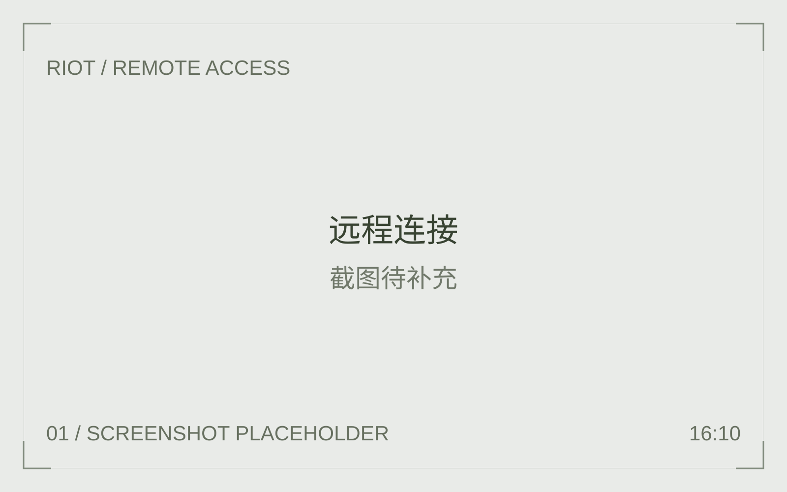
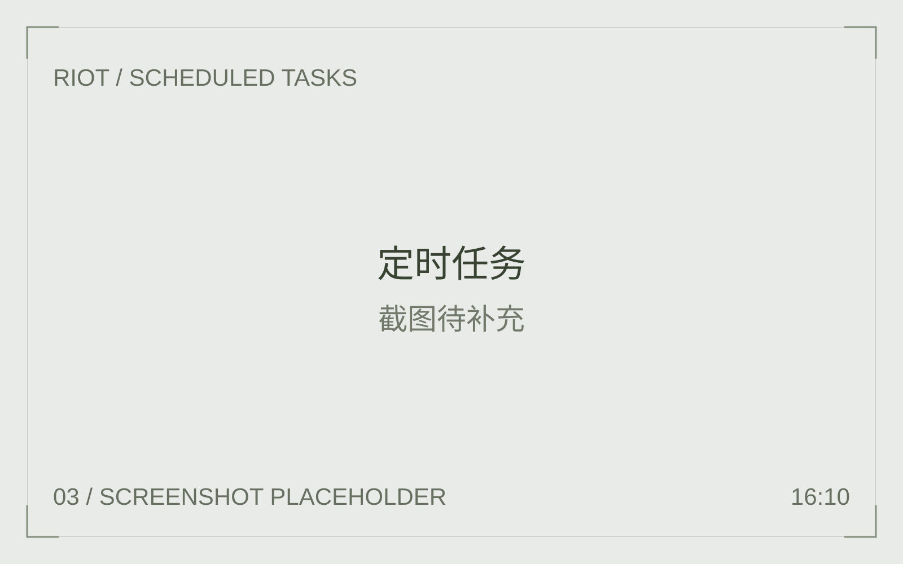
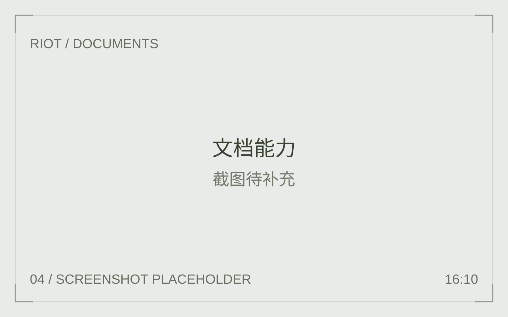
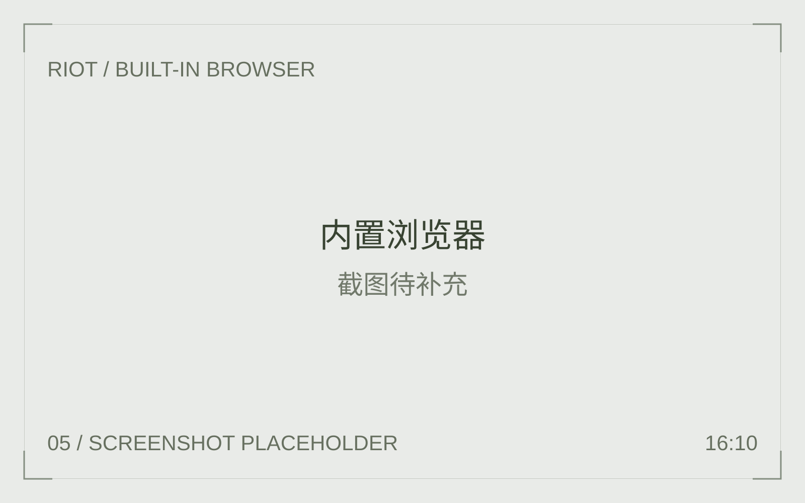
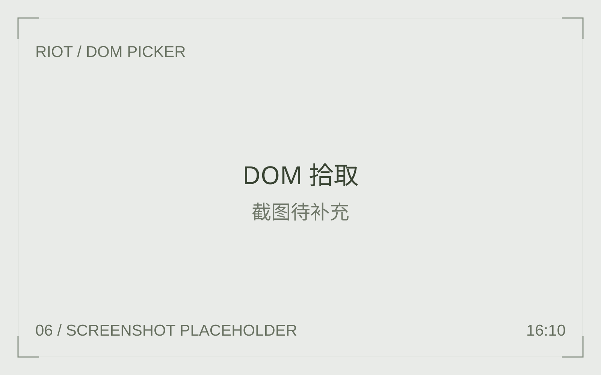

开源替代 Codex
宿主与内核分进程，崩溃不拖垮窗口。读仓库、改文件、跑命令、写 Word / Excel / PPT / PDF，都在你的机器上。模型用你自己的 API，不绑一家云。
独立内核 · 本地执行自选模型，自带 API
01 / 定位
打开项目，交代任务。内核在本机跑，工作台按 Cursor 摊开，权限和扩展按 Claude Code 收住。
宿主与内核分进程，崩溃不拖垮窗口。读仓库、改文件、跑命令、写 Word / Excel / PPT / PDF，都在你的机器上。模型用你自己的 API，不绑一家云。
独立内核 · 本地执行
对话、终端、浏览器和 Git
改动在同一扇窗口。规划写成文件，点「构建」才动手；多任务把活分给后台子
agent。@ 引用，或直接拖入附件。
Skills、斜杠命令、Hooks、MCP、项目记忆。六档权限，从每次询问到无人值守。敏感操作始终先问。
Skills · Hooks · 分档权限02 / 核心能力
远程接续、多 Agent 分工、定时执行。从浏览器操作到文档交付，都发生在你自己的机器上。

在手机或另一台电脑的浏览器里，连接正在运行的桌面 Riot。会话、终端与浏览器面板保持同步，任务仍在原来的机器上执行。
把检索、分析与实现交给多个 Agent 协作。主任务协调进度，子任务在后台推进，过程与结果都能回到同一个工作空间。

按每日、工作日、每周或指定时间编排任务。支持延时触发与漏跑补偿，让例行检查、信息汇总按计划进行。

创建与编辑 Word、Excel、PPT 和 PDF。安装文档运行时后，公式求值、版式渲染与检查都能在本机完成。

内嵌 Chromium，把导航、点击、填表、截图与 JavaScript 执行接入对话。页面操作就在眼前，过程清晰可见。

悬停高亮、点击选择，将 DOM 选择器与结构带入对话。准确指向需要调整的元素，让网页协作更直接。
抓包、HAR 导出、请求重放、拦截修改与 Fuzz 探测，覆盖网页调试与授权测试。
编辑历史消息、回滚整轮、重新生成，按会话设置系统提示词。
兼容 OpenAI 与 Anthropic 协议，支持 OpenRouter、vLLM、Ollama 与自定义端点。
03 / 设计原则
本地执行，自选模型，明确权限。每一步都围绕你自己的工作环境展开。
工具在本机运行。使用远程模型时，任务所需的上下文会发送至你配置的模型服务。
从每次询问到无人值守，六档模式匹配不同工作方式。敏感操作受权限规则约束。
Agent 内核运行在独立进程中。异常时保留可操作的窗口，便于恢复工作。
工具执行失败时，错误会返回对话，由 Agent 分析原因并继续修正。
04 / 开始使用
开源替代 Codex。
模型是你的。
选择适合你的桌面版本。
Apple Silicon · .dmg
安装到「应用程序」，配置模型 API，即可开始工作。
下载 macOS 版Windows 10 / 11 · x64
运行安装向导，在熟悉的桌面环境里开始新的任务。
下载 Windows 版个人与非营利用途免费，商业使用需另行授权。
源码与构建说明